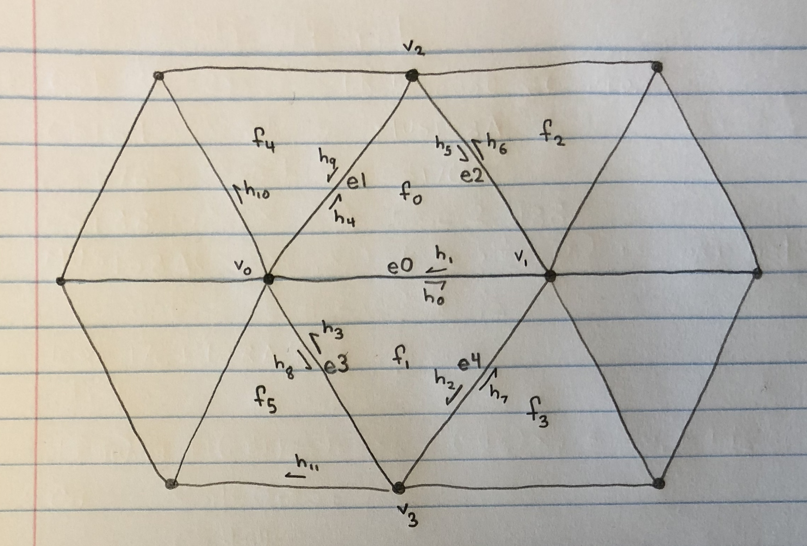
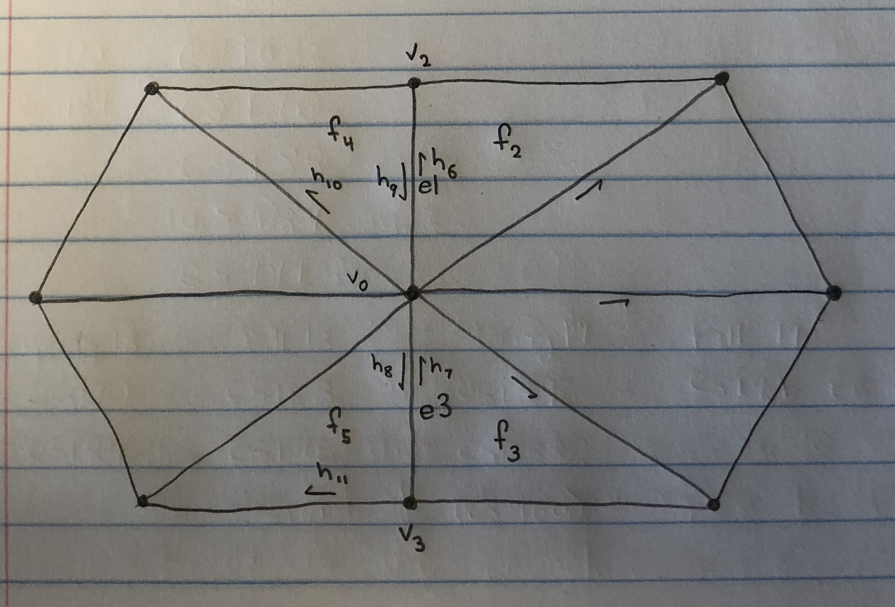
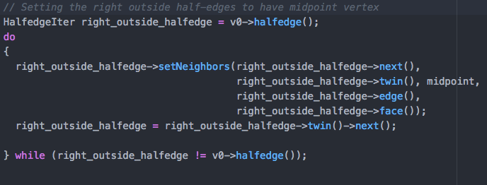
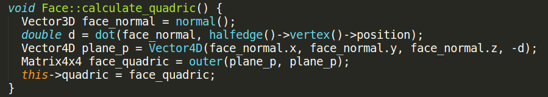
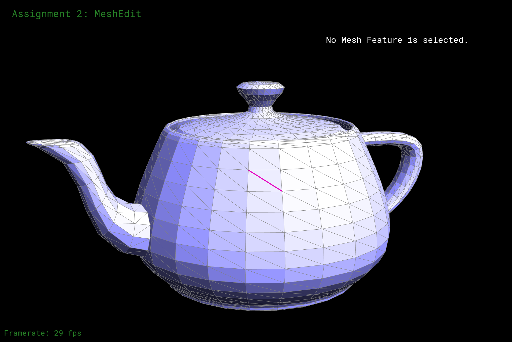
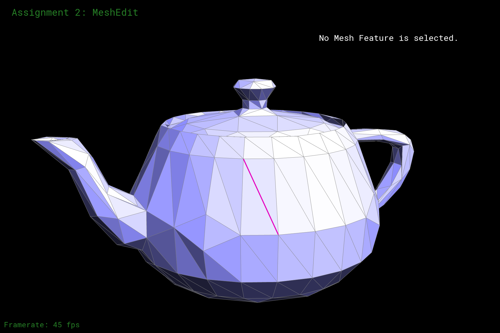

|
|
|
Our project is about downsampling and remeshing triangle meshes. The goal for downsampling is to reduce the number of triangles used to represent the shape of the mesh. The main difficulty is reducing the triangles, which is done with edge collapse. Edge collapse is then used in Quadric Error Metric downsampling.
The goal for isotropic remeshing is finding a better, discrete representation of a mesh with triangles of equal edge length. The main difficulty is adjusting edge lengths which is done by calculating new positions for vertices.
This algorithm is arguably the most cruicial function for the project, utilized in both mesh downsampling and remeshing. What edge collapse does is take a selected edge, and gets rid of it as well as merge the two vertices. Our algorithm is as follows:
Below is a basic diagram of out algorithm that we had originally based our implementation off of; however, we had to make some changes due to unforseen segmentation faults and allocation errors:
|   |
Here is our implementation of iterating around the right vertex, and changing all of the half-edge pointers to now point to the midpoint vertex if they were originally pointing to the right vertex. We do the same process to the left vertex (not shown), and do this in order to delete the two vertices without running into further pointer problems.
|  |
Shown below is the result of collapsing the highlighted edge on teapot.dae.


|
Check out the gallery for more images of the edge collapse function on various models.
The key to downsampling a mesh is to reduce the amount of triangles to the extent that the overall shape of the mesh is preserved. If we had a cow in our scene, but far away, we want less triangles while still having the shape of the cow. We can downsample using our handy edge collapse method, which helps delete faces and edges. Moreover, we preserve the shape of the mesh by minimizing the error between a downsampled surface resulting from an edge collapse and the original surface. Thus the overall algorithm would be to iteratively collapse edges that minimize this surface error until a target number of triangles is reached. I will elaborate on the idea of a quadric error. To define Quadric Errors, we used the paper "Surface Simplification Using Quadric Error Metrics" by Garland and Heckbert and the developer guide found on CMU's assignment page.
In order to minimize a resulting vertex's distance to the plane of the original mesh after an edge collapse, we need an equation that gives us the distance to a plane. With this, each face is going to have a derived plane equation that uses its normal $N = (a, b, c)$ and a vertex $p = (x, y, z)$ in the triangle. The plane equation $ax + by + cz + d$ where $d = N \cdot p$ thus gives us a way to represent a plane in a 4D homogenous vector $(a, b, c, d)$. If we have a point $u$ in 4D homogenous space and a 4D plane vector $v$, the distance from $u$ to $v$ is thus $u \cdot v$. Since we only care how far $u$ is from the plane and not whether it is below or above $v$, we want to square this value. This gives us $(u \cdot v)^2 = u^T v v^T u$. The $vv^T$, we will call $K$, is the face quadric. The distance a vertex is in comparison to its neighbors is then the sum of the face quadrics that touch the vertex. Then we can say that the error of collapsing and edge is the sum of the vertex quadrics at both endpoints of the edge. With this, we want to find the position of new point such that it minimizes the distance to the original surface. We find this by solving $Ku = 0$.
As the first step towards solving the quadric error for an edge, we first found the quadric for each face.
|  |
Then, for each vertex, we sum all of the surrounding face quadrics. Likewise, each edge is given an error that is the sum of the total quadrics found at both vertices connected by the edge. Since we want to greedily collapse edges with the cheapest error, we make a priority queue that orders edges by this error. In addition, since upsampling scales the number of face by 4, the target number of triangles for downsampling is the number of triangles in the mesh divided by 4. In sum, we
|   |
Be sure to check the gallery for more downsampled meshes.
We implemented incremental remeshing to create a more topologically accurate and regular mesh. We did this through enforcing a more regular edge length, improving mesh valence, and centering vertices. For this algorithm, we referenced this lecture from CMU Slides
The first part of this algorithm, we specified a length L to be the average length of all of the current edges in the mesh. Then, we defined values L_max = 4/3 * L and L_min = 4/5 * L. Then, using L_max, we split all edges longer than l_max, ensuring no edges would be too long, and we collapsed any edges that were less than L_min


|
Enforcing edge lengths resulted in the following change from the original mesh

|
The next major portion of this algorithm was enforcing optimal valence of the vertices, in other words, we made sure that most of the edges in the mesh had no vertex with more or less than 6 incident edges. To do this, we iterated through all of the edges in the mesh. For each edge, we first collected all of the vertices that would be involved in the flipping of the current edge, A, B, C, and D:

|
Then, using these vertices we used the following formula to compute the total error in the valence of the vertices involved with the edge flip:

|

|
Then, with a slightly edited version of this same formula, we calculated the valence error of these vertices if we were to flip the current edge. If the predicted valence error was less than the current valence error, we flipped the edge.

|
Enforcing an average edge length between average edge length resulted in the following change from the previous result:

|
The final portion of this algorithm was local spring relaxation, or more simply, moving vertices towards the centroid of their respective polygons. We did this by first calculating the centroid for each vertex, using the average position of its incident vertices:

|
Next, after computing the centroid of each vertex in the mesh, we iterated through the vertices of the mesh and using the vertex normal and centroid, created a difference vector with which to transform the current position of the vertex, but we multiply this vector by 4/5 in order to reduce the total distance of position change to preserve topology and reduce errors.

|
This final computation resulted in the following improvement to the mesh:

|
And finally, a comparision of the final result to the original mesh:

|
Implemented vertex deletion when we still intended to vertex clustering, then implemented isostropic remeshing, also contributed to edge collapse in order to make it compatible with remeshing.
Implemented edge collapse + add the rest here
Implemented quadric error downsampling as well as helped debug edge collapse and incremental remeshing. Also made the video for the milestone and this final report.
Click here for results gallery